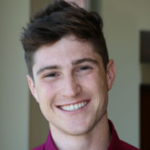
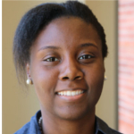

About
# PI: Francisco Valero-Cuevas Ph.D.

valero@usc.edu
Francisco’s Bio
I attended Swarthmore College from 1984-88 where I obtained a BS degree in Engineering. After spending a year in the Indian subcontinent as a Thomas J Watson Fellow, I joined Queen’s University in Ontario and worked with Dr. Carolyn Small. The research for my Masters Degree in Mechanical Engineering at Queen’s focused on developing non-invasive methods to estimate the kinematic integrity of the wrist joint.
In 1991, I joined the doctoral program in the Design Division of the Mechanical Engineering Department at Stanford University. I worked with Dr. Felix Zajac developing a realistic biomechanical model of the human digits. This research, done at the Rehabilitation R & D Center in Palo Alto, focused on predicting optimal coordination patterns of finger musculature during static force production.
After completing my doctoral degree in 1997, I joined the core faculty of the Biomechanical Engineering Division at Stanford University as a Research Associate and Lecturer. In 1999, I joined the faculty of the Sibley School of Mechanical and Aerospace Engineering at Cornell University as Assistant Professor, and was tenured in 2005. In 2007, I joined the faculty at the Department of Biomedical Engineering, and the Division of Biokinesiology & Physical Therapy at the University of Southern California as Associate Professor; where I was promoted to Full Professor in 2011. In 2013 I was elected Senior Member of the IEEE, and in 2014 to the College of Fellows of the American Institute for Medical and Biological Engineers.
```
Brain Body Dynamics Lab
Ronald Tutor Hall, RTH-421
3710 S. McClintock Ave
Los Angeles, CA 90089-2905, USA
Phone: (213) 740-4219
Fax: (213) 821-5696
```
Lab Members
-

Ali Marjaninejad
BME PhD student
marjanin@usc.edu
Researching biomedical signal processing, neuroscience, and brain machine interfaces. -

Christopher Laine
Research Assistant Professor
claine@usc.edu
Division of Biokinesiology and Physical Therapy. Understanding the neurophysiology of human movement by measuring and characterizing neuromuscular control signals and coordination strategies in health and disease. -

Brian Cohn
CS PhD Student
brian.cohn@usc.edu
Working towards high-dimension visualization, static & dynamic musculoskeletal analysis, and scientific replicability across neuromechanical research. -

Akira Nagamori
BKN PhD Student
nagamori@usc.edu
Understanding voluntary feedback control of goal-directed actions through sensorimotor integration using analysis of motor performance, reflex testing and neruomuscluar modeling. -

Kian Jalaleddini
Post-doc
jalaledd@usc.edu
Postdoc scholar interested in understanding the role of peripheral neuromuscular mechanisms in the control of posture and movement with a passion in signal processing and system identification. -

Suraj Chakravarthi Raja
EE PhD student
surajcha@usc.edu
Making fully operational, neurally interfaced exo-suits and smart prosthesis an affordable reality. -

Jun Yong Shin
Post-doc
junys@uci.edu
Designing a wireless data collection system so signals from various sensors (such as accelerator, gyroscope, and load cells) are wirelessly transmitted to a mobile device for visualization of all waveforms in real time. This will ameliorate data collection and analysis across multiple areas of kinesiology. -

Daniel Hagen
BME PhD student
dhagen@usc.edu
Understanding the limb mechanics of routine motions and how the nervous system accomplishes these tasks under spatial and temporal constraints. Observing how subtle changes in endpoint trajectories in a simple basketball shot can potentially alter accuracy. -

Jasmine Berry
BME PhD student
jasminab@usc.edu
Examining opportunities at the intersection of biomechanics and computational modeling. -

Victor Esparza
BME Masters student
vesparza@usc.edu
-

Séb Arnold
CS/Math undergrad
arnolds@usc.edu
Mathematical Optimization for Deep Reinforcement Learning.
-

Taegyum Kim
CS undergrad
taegyumk@usc.edu
-

Priyanka Vachhani
INF MS student
pvachhan@usc.edu
-

Théo Denisart
Visiting Scholar from EPFL (Swiss Federal Institute of Technology) interested in designing bio-inspired systems and novel mechanical designs. Working on a tendon driven systems.
theo-tim.denisart@epfl.ch
Interns
| Giridhar Akila Dhakshinamoorthy | CS Masters Student |
| Shaohui Quian | EE Masters Student |
| Niharika Singh | BME Masters Student |
| Keegan Bate | BME Masters Student |
| Maral Kasiri | BME Masters Student |